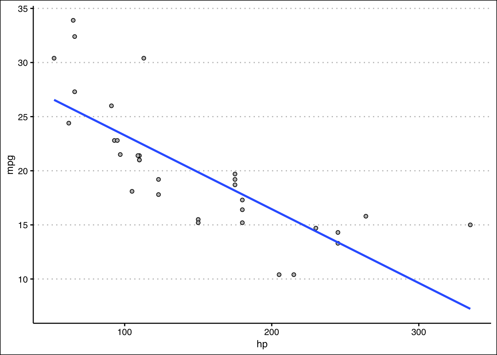
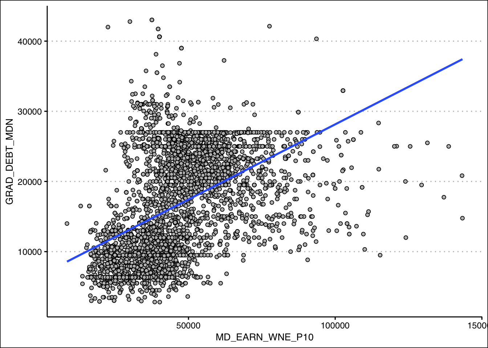

6 Regression I
Measures of association are essential tools in business statistics for analyzing relationships between variables. They help determine whether changes in one variable are linked to changes in another, providing valuable insights into patterns and dependencies. Understanding these relationships is critical for making informed decisions. By quantifying the strength and direction of associations, businesses can better interpret data, optimize strategies, and drive meaningful outcomes. Below we study important measures of association.
6.1 The Covariance
The covariance is a measure that determines the direction of the relationship between two variables. It is calculated by \(s_{xy}=\frac {\sum(x_i-\bar{x})(y_i-\bar{y})}{\sum (x_i-\bar{x})^2}\). The result of the covariance indicates the relationship between the two variables. If \(s_{xy}>0\) there is a direct relationship, if \(s_{xy}<0\) there is an inverse relationship, and if \(s_{xy}=0\) there is no relationship.
Example: Let’s consider the following data that captures the price of stocks (SPY) and bonds (BND):
The idea behind calculating a covariance is to determine whether there is a relationship between the two variables. Let’s start by calculating the formula. We can do this by finding deviations from the mean for both SPY and BND. The table below shows the deviations from the mean for each variable in columns 3 and 4.
Column 5 calculates the product between column 3 and column 4. The covariance is simply the average of the numbers of column 5. Hence, \(s_{xy}=-71\). Since \(s_{xy}\) is negative we can establish that there is an inverse relationship between SPY and BND.
Intuitively, the covariance checks whether on average the products of the deviations from the mean is positive or negative. The image below explains the intuition.
The image plots the SPY and BDN in a scatter plot. You can see that there is an inverse relationship. The vertical and horizontal lines represents the mean of SPY and the mean of BND, respectively. The red numbers are the deviations from the mean (you can compare with the table). So whenever x lies below the mean and y lies above its mean, the product is negative. This happens as well when x lies above the mean and y underneath its mean. As a result, the points are aligned so that an inverse relationship is reflected. You’ll notice that the product of the deviations in these cases is negative, and ultimately measured with the covariance.
6.2 The Correlation
The correlation measures the strength of the linear relationship between two variables. It is calculated by \(r= \frac {s_{xy}}{s_x s_y}\). The correlation coefficient is between \([-1,1]\). When the correlation coefficient is \(1\) (\(-1\)), there is a perfect direct (inverse) relationship between the two variables.
The image above shows three examples of correlation coefficients. When the correlation coefficient is -0.4 or 0.4 the direction of the relationship depends on the sign of the coefficient. The magnitude of 0.4 indicates that the strength of the relationship is moderate (i.e., a general linear pattern is observed but many points do not lie on the trend line). When the correlation coefficient is zero, there is no linear pattern in the relationship.
Ex: Consider the SPY and BND data. The standard deviation of SPY is \(1.58\) and that of BDN is \(50.37\). Substituting into the correlation formula we get a correlation coefficient of \(r= \frac {-71}{1.58 \times 50.37}=-0.89\). This indicates that the relationship between SPY and BND is inverse and strong.
6.3 The Coefficient of Determination (\(R^2\))
The coefficient of determination or \(R^2\), measures the percent of variation in \(y\) explained by variations in \(x\). It is calculated by \(R^2=r^2\). The number that we get from the \(R^2\) tells us how well a variable (x) explains the variation in the another variable (y). The number could be anywhere from zero (indicating that the two variables are unrelated), to one (indicating that one variable explains entirely the variation of the other variable).
Ex: Consider once more the SPY and BND example. The correlation coefficient is given by \(r=-0.89\). The \(R^2=(-0.89)^2=0.79\). This indicates that about 80% of the variation in the SPY can be explained by the changes in BND. Hence, these two variables are closely related.
6.4 Measures of Association in R
R makes it very convenient to retrieve measures of association. Let’s get the data from SPY and BND example into R:
library(tidyverse)
library(ggthemes)
data<- tibble(SPY=c(87,86,84,85,83), BND=c(316,380,416,430,440))Now we can retrieve the covariance by using the cov() command in R. Below is the code:
cov(data$SPY,data$BND)[1] -71We confirm that the covariance is -71 and that there is an inverse relationship between the variables. To verify the correlation coefficient, we use the code below:
cor(data$SPY,data$BND)[1] -0.891549The correlation coefficient of -0.89 indicates a strong inverse linear relationship between the two variables. Lastly, the coefficient of determination is calculated below:
cor(data$SPY,data$BND)^2[1] 0.7948597It seems that about 80% of the variation in the price of bonds (BND) is explained by the variation in the price of stocks (SPY). We can create a visual of the relationship between the two variables by using the geom_point() function in R.
data %>% ggplot() +
geom_point(aes(y=SPY,x=BND), col="black",
cex=2, bg="blue", alpha=0.5, pch=21) +
theme_clean()The visualization above is called a scatter plot. A scatter plot displays pairs of [\(x\),\(y\)] as points on the Cartesian plane. The plot acts as a visual aid to determine the relationship between two variables. We can see that the points are inversely related to each other.
Here are some useful functions in r:
To calculate the covariance use the
cov()function. The input must be two vectors (variables).The correlation coefficient can be calculated using the
cor()function.The input must be two vectors (variables).The
geom_point()function will create scatter plots. Make sure you include two variables in theaes()function. The argument cex increases the size of the points, pch changes the point character, bg selects the color, and alpha adjusts the transparency of the background color (bg).
6.5 Exercises
The following exercises will help you understand statistical measures that establish the relationship between two variables. In particular, the exercises work on:
Calculating covariance and correlation.
Using R to plot scatter diagrams.
Calculating the coefficient of determination.
Answers are provided below. Try not to peak until you have a formulated your own answer and double checked your work for any mistakes.
Exercise 1
For the following exercises, make your calculations by hand and verify results using R functions when possible.
- Consider the data below. Calculate the covariance and correlation coefficient by finding deviations from the mean. Use R to verify your result. Is there a direct or inverse relationship between the two variables? How strong is the relationship?
| x | 20 | 21 | 15 | 18 | 25 |
|---|---|---|---|---|---|
| y | 17 | 19 | 12 | 13 | 22 |
Answer
The covariance is \(14.9\) and the correlation is \(0.96\). The results indicate that there is a strong direct relationship between the two variables.
Let’s start by finding the deviations from the mean for the x variable in R.
x<-c(20,21,15,18,25)
(devx<-x-mean(x))[1] 0.2 1.2 -4.8 -1.8 5.2We will do the same with y:
y<-c(17,19,12,13,22)
(devy<-y-mean(y))[1] 0.4 2.4 -4.6 -3.6 5.4Note that when the deviations in x are negative (positive), they are also negative (positive) in y. This is indicative of a direct relationship between the two variables. The covariance is given by:
(Ex1Cov<-sum(devx*devy)/(length(devx)-1))[1] 14.9We can verify this by using cov() function in R.
cov(x,y)[1] 14.9The correlation coefficient is found by dividing the covariance over the product of standard deviations. In R:
(Ex1Cor<-Ex1Cov/(sd(x)*sd(y)))[1] 0.9678386We can once more verify the result in R with the built in function cor().
cor(x,y)[1] 0.9678386- Consider the data below. Calculate the covariance and correlation coefficient by finding deviations from the mean. Use R to verify your result. Is there a direct or inverse relationship between the two variables? How strong is the relationship?
| w | 19 | 16 | 14 | 11 | 18 |
|---|---|---|---|---|---|
| z | 17 | 20 | 20 | 16 | 18 |
Answer
The covariance is \(0.85\) and the correlation is \(0.148\). The results indicate that there is a very weak direct relationship between the two variables. They might be unrelated.
Let’s start with w and finding the deviations from the mean in R.
w<-c(19,16,14,11,18)
(devw<-w-mean(w))[1] 3.4 0.4 -1.6 -4.6 2.4We will do the same with z:
z<-c(17,20,20,16,18)
(devz<-z-mean(z))[1] -1.2 1.8 1.8 -2.2 -0.2The covariance is given by:
(Ex2Cov<-sum(devw*devz)/(length(devz)-1))[1] 0.85We can verify this with the cov() function in R.
cov(w,z)[1] 0.85The correlation coefficient is found by dividing the covariance over the product of standard deviations. In R:
(Ex2Cor<-Ex2Cov/(sd(z)*sd(w)))[1] 0.1480558We can once more verify the result in R with the built in function cor().
cor(w,z)[1] 0.1480558Exercise 2
You will need the mtcars data set to answer this question. This data set is part of R. You don’t need to download any files to access it.
- Calculate the correlation coefficient between hp and mpg. Explain the results. Specifically, the direction of the relationship and the strength given the context of the problem.
Answer
The correlation coefficient is \(-0.78\). This is indicative of a moderately strong inverse relationship between mpg and mp.
In R we can easily calculate the correlation coefficient with the cor() function.
cor(mtcars$mpg,mtcars$hp)[1] -0.7761684- Create a scatter diagram of the two variables. Is the scatter diagram what you expected after you calculated the correlation coefficient?
Answer
The scatter diagram is downward sloping. Most points are close to the trend line. It is what was expected from a correlation coefficient of \(-0.78\).
library(tidyverse)
library(ggthemes)
mtcars %>% ggplot() +
geom_point(aes(y=mpg,x=hp), col="black",
bg="grey", pch=21) +
geom_smooth(aes(y=mpg,x=hp), formula=y~x,
method="lm", se=F) +
theme_clean()
- Calculate the coefficient of determination. How close is it to one? What else could be explaining the variation in the mpg? Let your dependent variable be mpg.
Answer
The coefficient of determination is \(0.6\). This value is not very close to one. This is expected since miles per gallon can also vary because of the cars weight, and fuel efficiency. It makes sense that the hp only explains \(60\)% of the total variation.
In R we can calculate the coefficient of determination by squaring the correlation coefficient.
cor(mtcars$mpg,mtcars$hp)^2[1] 0.6024373Exercise 3
You will need the College data set to answer this question. You can find this data set here: https://jagelves.github.io/Data/College.csv
- Create a scatter diagram between GRAD_DEBT_MDN (Median Debt) and MD_EARN_WNE_P10 (Median Earnings). What type of relationship do you observe between the variables?
Answer
It seems like there is a direct relationship between both variables. The more debt you take, the higher the salary.
Start by loading the data. We’ll use the read_csv() function:
library(tidyverse)
College<-read_csv("https://jagelves.github.io/Data/College.csv")The two variables of interest are GRAD_DEBT_MDN and MD_EARN_WNE_P10. The following code creates the scatter plot:
College %>% ggplot() +
geom_point(aes(y=GRAD_DEBT_MDN,x=MD_EARN_WNE_P10), col="black",
bg="grey", pch=21) +
geom_smooth(aes(y=GRAD_DEBT_MDN,x=MD_EARN_WNE_P10), formula=y~x,
method="lm", se=F) +
theme_clean()
- Calculate the correlation coefficient and the coefficient of determination. According to the data, are higher debts correlated with higher earnings?
Answer
The correlation coefficient shows a moderate direct relationship between earnings and debt \(0.46\). The coefficient of determination indicates that only \(21\)% of the variation in earnings can be explained by debt.
In R we can start with the correlation coefficient:
(Correlation<-cor(College$GRAD_DEBT_MDN,
College$MD_EARN_WNE_P10,"complete.obs"))[1] 0.4615361We can simply square the correlation to obtain the coefficient of determination:
Correlation^2[1] 0.2130155